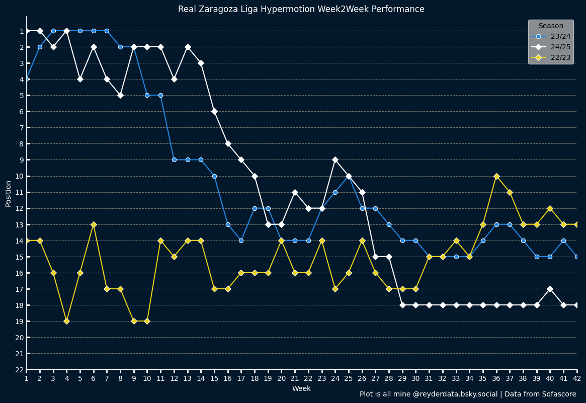
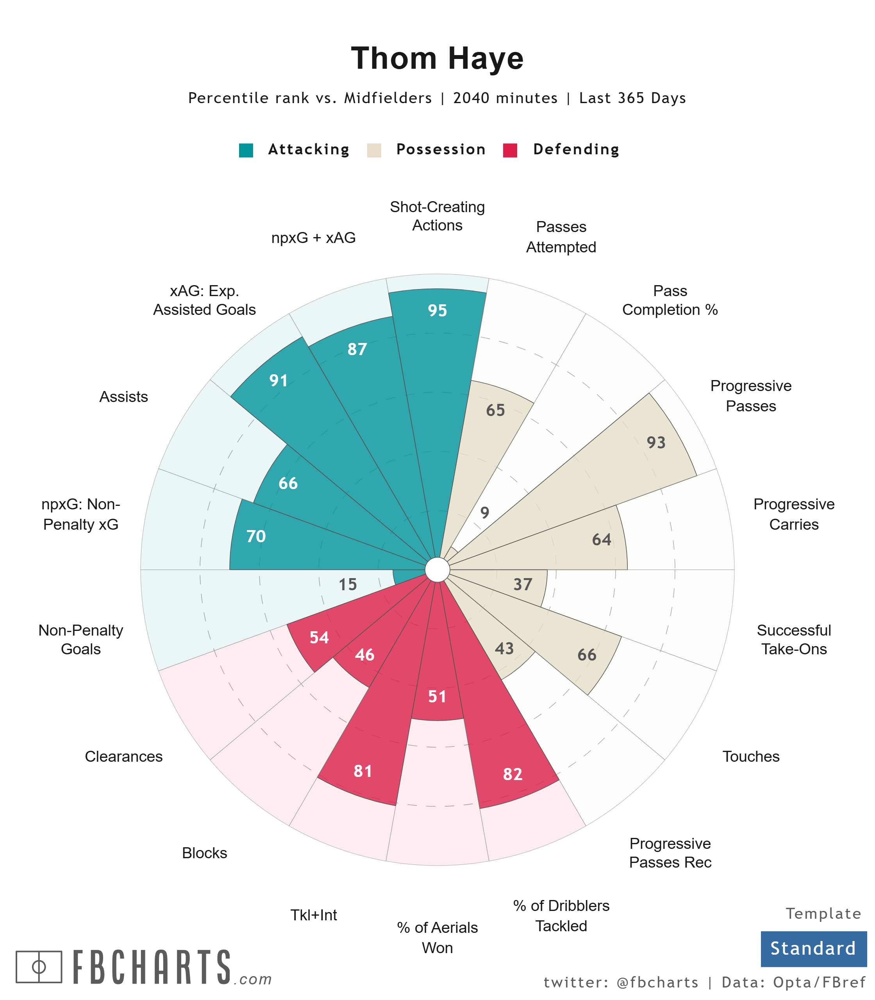

PROYECTO 02 · SCOUTING · PYTHON · EXCEL
Real Zaragoza: propuesta de mercado de verano
Proyecto que combina scouting y análisis para proponer opciones de fichaje en el mercado de verano del Real Zaragoza, presentado como una memoria en diapositivas con gráficos propios.
Planteamiento
- Contexto: situación actual del equipo con algo de perspectiva sobre las temporadas anteriores.
- Necesidades: posiciones y roles que reforzaría, y en qué países y ligas centrar la búsqueda.
- Candidatos: un resumen de todos los perfiles propuestos y después un análisis detallado de cada uno.
Contexto: la temporada 24/25

La 24/25 empieza en la parte alta pero cae a la zona de descenso a partir de la jornada 29. Este punto de partida justifica la necesidad de reforzar la plantilla.
Análisis de candidatos
Para cada jugador propuesto se revisan sus percentiles respecto a jugadores de su misma posición, junto con gráficos propios elaborados en Python a partir de datos de FBref. Entre los perfiles analizados están Thom Haye, Patrik Mercado, Lucas Esquivel, Santiago Cáseres o Jhoan Hernández.

Entregables
El repositorio incluye la presentación en PowerPoint, la carpeta de imágenes y el notebook con el que se generan los gráficos. También se puede descargar un .zip con la presentación y todas las imágenes.